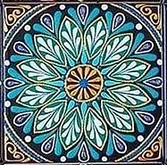

At Siddeeqa Institute we hold in the highest esteem and have immense love for the following predecessors in the deen,
who established the shari'ah and sunnah firmly in their lives and served the cause of Islam in ways best suited to the
needs of their times. We draw inspiration from their lives, personalities, and work, and aspire to emulate them in serving Allahﷻ,
His Messenger ﷺ and the ummah of His Messenger ﷺ. The list below begins after the blessed companions of the Prophet ﷺ,
all of whom were guiding lights for us, and love for whom is a part of our faith. Furthermore, this list is neither
exhaustive nor exclusive, but is presented here to reflect our association with various branches of the deen and of sacred knowledge.
• Shaykh Hasan al-Basri
• Shaykha Rabiah Al-Adawiyyah
• Shaykh Junaid Al-Baghdadi
• Imam Abu Hanifah
• Imam Malik bin Anas
• Imam Al-Shafi'i
• Imam Ahmad ibn Hanbal
• Imam Abu Ja'far al-Tahawi
• Imam Abul-Hasan al-Ash’ari
• Imam Abu Mansur al-Maturidi
• Imam Abu Hamid al-Ghazali
• Shaykh Abdul Qadir al-Jilani
• Maulana Jalaluddin Rumi
• Khwaja Mu'eenuddin Chishti
• Khwaja Nizamuddin Awliya
• Khwaja Bahauddin Naqshband Bukhari
• Khwaja Ubaidullah Ahrar
• Shaykh Ahmad Al-Faruqi Sirhindi
• Shah Ghulam Ali Dehlawi
• Shaykh Othman Dan Fodio & Nana Asmau
• Shah Waliullah Muhaddith Dehlawi
• Maulana Qasim Nanotwi
• Maulana Rasheed Ahmad Gangohi
• Khwaja Fazal Ali Quraishi
• Maulana Ashraf Ali Thanwi
• Shaykh Mustafa Sabri
• Allama Zahid Al-Kawthari
• Maulana Husain Ahmad Madani
• Maulana Zakariyya Kandhelwi